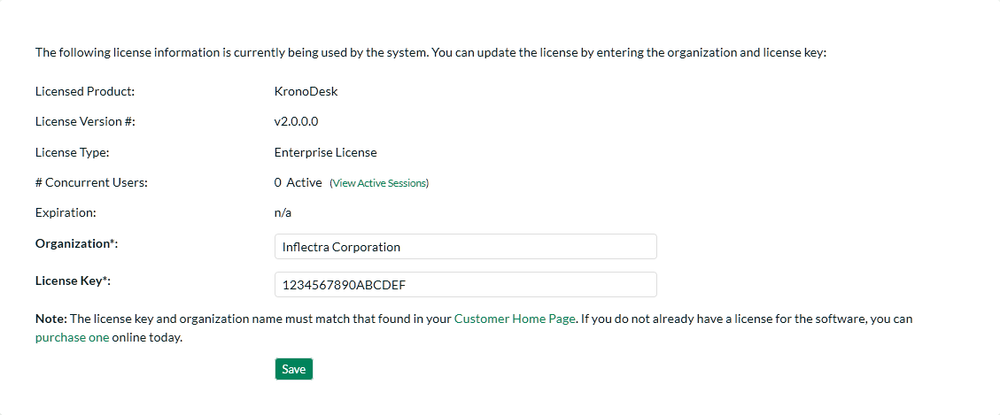

System Settings
This section contains all of the application-wide settings that affect the entire system, rather than a specific module. The only exception is that the settings related to authentication and user management are in their own separate group "User Settings".
General Settings
The General Settings page is used to set the general application-wide settings that affect the overall application and are used to ensure that the application matches your environment. In the current version, you can specify the default language, specify the base URL, configure the folder used to store document attachments and also specify whether certain parts of the application should require a secure connection.

This page lets you specify the following values:
-
Default Culture - KronoDesk can display information in a variety of different languages (assuming that the appropriate language packs have been installed) and number formats. By default, KronoDesk will use the regional settings (language and number formats) of the operating system it has been installed on. However, you can override this default by choosing the appropriate culture from the list of options displayed in the drop-down list. Note: The list of culture options does not reflect the available language packs, so in some cases, the setting will only change the number formats.
-
Default Time Zone - KronoDesk stores all dates and times internally in Universal Coordinated Time (UTC) and can therefore display dates/times adjusted for different time zones. By default, KronoDesk will display dates in the time zone specified in the operating system it has been installed on. However, you can override this default by choosing the appropriate display time zone from the list of options displayed in the drop-down list.
-
Attachments Folder - By default when KronoDesk is installed, the document attachments uploaded in the system get stored inside the C:\Program Files\KronoDesk\Attachments folder located inside the main KronoDesk installation root. However you may want to have the documents stored on a remotely mounted drive or on a different hard disk partition. In which case you can simply change the folder pointed to in the text-box illustrated above and then click [Save] to commit the change. When changing the directory, be sure to move any existing attachment files to the new location, and verify that the IIS User has read and write access to the directory.
- Application Base URL - This is the URL that your users use to access the system. Do not put the /Login.aspx or any other page here, as this URL is used to generate links to different pages in the application. This setting is primarily used in email notifications and RSS feeds to specify the URL of the application.
-
Require SSL -- When this is selected, the application will require a secure connection when accessing the Account Profile pages. This is useful if you want to run the site using an unencrypted connection (to maximize performance) but want to require a secure connection for the login pages where a user will have to enter a password. Using this option requires that you have a Secure Sockets Layer (SSL) certificate installed on your web server.
-
Use SQL Free Text -- If possible, when running searches and queries, have the application use SQL's Free Text indexing to speed up result pages to users. Note that enabling Free Text Indexing will require higher minimum system requirements for the SQL Server.
-
Allowed Domains -- This is used when accessing the KronoDesk REST API from another web page using a Cross Origin Request Sharing (CORS) based REST request. In KronoDesk you need to specify the allowed domains (or * for all) which are allowed to make sure a request.
-
Authoritative Domain/Protocol -- In case where multiple domains point to the same installation (i.e. www.kronodest.net and kronodest.net), any access to the application will redirect to the domain and protocol entered here.
Enabled Sections
This section allows you to activate and deactivate different parts of the application (for example you might not want to initially make the support forums available to customers). Changes take effect immediately, and no data is lost. You can enable the sections at a later date, and still have all of your information from earlier. You are still able to adjust settings for a disabled section in Administration, but none of the changes will be visible until the section is re-enabled.

Appearance
The Appearance page is used to customize the information displayed in KronoDesk and edit the colors and theme of the application.
Theme Tab
The first tab lets you select a pre-generated theme to use or create a new theme or edit an existing theme.
On this tab, you can select and 'Apply' the theme you want to use for the application. Or, if you select 'Edit Selected Theme' or 'Create New Theme', you will be taken to the theme edit window:

By selecting the colors in the selection boxes, the live preview window will update to show how the actual application will work, using a sample page. Once you have your design configured, click the 'Save' button to return to the theme selection. Then, click the 'Apply Theme' button to apply the designed theme to the whole application. Do not set all colors to the same value! Your users will not be able to navigate the site.
Branding Tab
This tab is where you can specify static information relating to your company, external links and other fixed-page items.
This page lets you specify the following values:
Images:
-
Company Logo -- This is the image that is displayed in the top left corner of the navigation bar, on wider devices. (Desktops, tablets in landscape mode, etc.)
-
Mobile Logo -- This is the image that is used in the top left corner on smaller devices.
Company Information:
-
Company Name -- This field is used to change the name of the company that is displayed in the application footer
-
Copyright Year -- This field is used to change the copyright year to match the starting year of your company's website copyright.
-
Contact Phone Number -- This field is used to specify the phone number that should be displayed on the application footer
-
Email Address -- this field is used to specify the email address displayed on various pages within the application. We recommend that you set this to match your primary support email address (e.g. support@mycompany.com or info@mycompany.com).
-
RSS Feed -- The application home page will display a list of recent news headlines from your company's newsfeed. To enable this functionality, simply enter the URL for your company's RSS newsfeed into this text box and it will automatically enable the home page widget and tell it to display news items from your newsfeed.
-
Title Prefix -- All of the web pages in KronoDesk prefix the title of the page with the application name (e.g. "KronoDesk | Help Desk" or "KronoDesk | Support Forums"). This setting allows you to choose the text displayed in the prefix. We recommend we set it to your company's name. That way, web pages will be displayed using this name (e.g. "MyCompany | Help Desk").
Hyperlinks:
-
Header Icon Link -- This is the URL to take the user to when they click the company logo.
-
Useful Link #1 - #3 -- These are the names (text) and the URLs to display to the user. These can be used in Email templates for notifications going out to users, and are displayed on the customer's home page.
-
Footer Link #1 - #3 -- These are the names (text) and the URLs to display to the user. These are displayed in the footer of the application.
Page Texts: This is a list of links to pages that have inline editors to edit and adjust how the pages look to users viewing the pages.
Page Javascript: This allows the administrator to add some script to execute on every page. All pages will run the Javascript entered here, except for Administration pages. This would be used to enter in Analytics trackers or other SEO or ROI tracking code.
Email Configuration
This section allows you to change the settings regarding how KronoDesk sends out email notifications. There are several tabs that you contain different settings:
Email Options
This tab allows you to change some of the basic high-level email settings:
The options are:
-
Allow Outgoing Emails: Turning this off will disable ALL outgoing emails. Note that with this off, the email importer cannot be used, as users created via the importer will not be able to verify their account.
-
Send User Welcome Email: When this is enabled, a new registered user will receive a welcome email.
-
Notify Admin of New User: When enabled, the administrator account will be sent an email notifying of a new user registration.
-
From Email Address: On outgoing emails, this name and address is the email account the email will come from.
-
Reply-To Email Address: On outgoing emails, this name and address will be in the 'Reply-To' header of the email.
-
Force Email Control?: This setting lets the users define their own email options. If enabled, then users will not be able to disable receiving emails from the application. If disabled, they will be able to turn off email notifications.
-
Send Email Separator: Recommended if using the Email Importer for importing support tickets from an email account. Enabling this will add a line that will help the Importer keep reply text as minimal as possible.
SMTP Server
This page allows for setting up KronoDesk to communicate with your SMTP Server. The fields available and their usage are:
The options are:
-
Use IIS Mail Server Settings: If set to 'No', you must define your SMTP server information below. If set to 'Yes', the application will use the defined IIS virtual server settings.
-
SMTP Server Hostname / Port: The DNS or IP address of the SMTP server, and the port that it accepts incoming mail on.
-
Use SSL Connection: Whether or not the SMTP server requires an SSL connection.
-
SMTP Server UserID / Password: The username or password to log onto the SMTP server with. If no username or password is required, enter in 'anonymous' in both fields.
Mail Templates
This tab allows you to customize the email templates that are sent out:
To modify a template, you need to select which template you wish to edit. Once you select the template, the page will reload and display the selected template. The subject line is used in all emails sent with this template -- note that some templates do not have a subject defined, and in this case the field will be hidden.
With this editor, you can link to external images, but cannot send any images as attachments.
You can modify the template to make it match your company's styles, adding colors and fonts as needed.
Outgoing data uses a Token system. You can select a token to insert using the Token button in the toolbar of the rich text editor ([T]). It will open a dialog letting you select the token to insert.
Available templates to edit are:
-
User: New User Registration: If the 'Send new user welcome email' setting is set to true, this email template is sent out when a user registers.
-
User: Forgot Password: When the user forgets their password.
-
Forums: Subscription: Sent when there is an update to a forum that the user is subscribed to.
-
KB: Subscription: Send when there is an update to a Knowledge Base Article that the user is subscribed to.
-
User: Inactive Account Created: Sent out when a user had an account created for them via the Email Importer application. Contains information on how the user can verify their account to be able to log into the website.
-
Ticket: Notification: Sent out when a notification event is fired off due to a ticket update. This is the master template -- the template can be edited per notification event when the event is created.
Custom Lists
Custom Lists at this time are used in Custom Field definitions. The main custom property list screen lists all available lists available for assignment to a custom field.

The table shows all defined custom lists and their information. The Custom List ID, the name of the list, how many selectable options it has, and then actions you can perform on the list -- Edit the Values, Remove (delete) the list, or add a new list. Lists must have a unique name.
When creating or editing a list, the following screen is displayed:

The list name and description are for identification purposes only, and are not visible to other users in the application. Each list item must have a unique name, if you try to add a duplicate or empty value, an error will be thrown. Click the 'Save' button to save your values, and use the link at top to return to the main Custom List page.
Product Definitions
Products are used throughout the system in various ways. For tickets and in the knowledge base, they are used to classify and for organization, and to help the user find information they need to help them. The screen for editing and creating products is:
The fields are used as follows:
-
Token: Not used at this time, however, each product must have a unique token ID.
-
Display Name: This is what the product will display to users when selecting or researching a product.
-
Description: This is a short description for internal use to describe the product.
-
Workflow: This is the selected workflow for Tickets assigned to this product. See Workflows.
License Details
The license details page displays the information about the installed license for the particular instance of KronoDesk® being used. The information displayed includes: the product name, the license version (e.g. v2.0.0.0), type of license in effect (x-user fixed, x-user concurrent, demonstration, enterprise, etc.), the organization that the license belongs to, the actual license key code and finally the number of agent-users concurrently logged-in. This last piece of information is useful as it helps administrators track down how many agent licenses are being used.
A sample page is illustrated below:

To change the license key used by the system (for example, if to upgrade from Trial edition to Standard edition), you do not need to reinstall KronoDesk. All you need to do is simply change the information in the organization and license key text-boxes to match the license key and organization name found in the customer area of our website (http://www.inflectra.com/CustomerArea) and click the <Update> button.
If there is an issue with the license key (e.g. a trial version that is passed its expiration date, or where the license key doesn't match the organization name) an error will be displayed describing the specific issue with the information you entered. If you are unable to get the system to work with the license key information, please contact Inflectra® customer support at: support@inflectra.com.
Event Log
The "System Event Log" administration page lets you view all of the errors, warning and other diagnostic messages that have been logged in the system:

Each event entry is displayed along with the date-time it occurred, the type of event (error, warning, information, success audit, failure audit), category (application, source code provider, data-synchronization) and the short name. To view the full details of the error or warning, click on the "View Item" button:
The popup dialog box will display the full error message log and stack trace in a moveable dialog box. This information should be provided to Inflectra customer support if you log a help desk ticket.
Remove Sample Data
This administration link is only available while the system still has sample data in it. This administration option will remove all data that was added in at installation, with the following guidelines:
-
Users: All users between ID 2 and ID 11 will be removed. The main Administrator account, and any users created after installation will remain.
-
User Organizations: The two sample organizations will be removed.
-
Tickets: All tickets created at installation will remain, except for the first 28 tickets which were installed
-
Ticket Statuses, Priorities, Resolutions, and Types: All these will be removed, unless any are used in tickets that were created after installation.
-
Custom Property: All custom property definitions for Tickets will be removed.
-
Attachments: All attachments created at installation will be removed.
-
Articles: Articles 1 to 28 will be removed.
-
Products: All predefined products will be removed, unless they are in use by any tickets not removed.
-
Categories: Categories 1 through 4 will be removed, including all forums and threads contained therein, even if they were added after installation.
This can only be run once, and cannot be undone without reinstalling the entire application, so please use with caution!
Some sample data will remain, depending on what data was added before the remove action was run. Depending on the data, there may be some foreign links in the database that will prevent some sample data from being removed.
Orphaned Documents:
In some occasions, there can be attachments stored on the system that are not deleted when their associated item is deleted. This can cause unused files to fill up the attachments storange directory. This page will show the administrator any attachments in the database that have no associated link to a ticket or KB article, or documents on the file server with no record in the database:

By clicking the 'Purge' button, the system will be cleaned of all unused files and unlinked attachments.